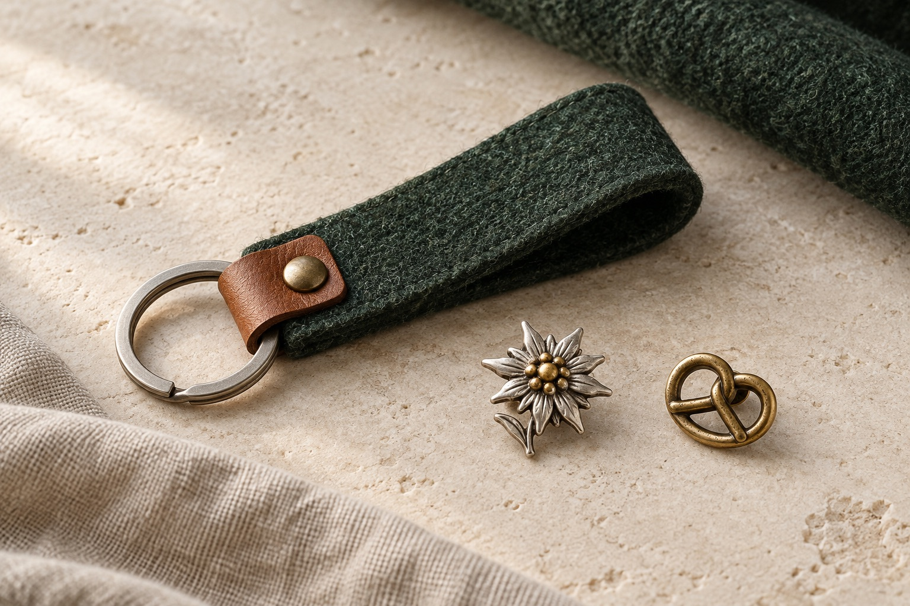

01 / Wiesn-Glupperl
Dein Name. Dein Glupperl.
Helles Holz, klare Schrift und ein kleines Detail mit Heimatgefühl. Dein Name, ein Spitzname oder ein kurzer Spruch machen die Idee persönlich.
Glupperl anfragenKreativstudio · Bayern
Ein unabhängiges Studio für Gestaltung, Technik und Dinge, die es noch nicht gibt.
Wiesn entdeckenWiesn · Auf deine Art
Persönliche Glupperl und kleine Accessoires, die Tracht zu deiner machen. Entdecke unsere Gestaltungsideen – und erzähl uns, was zu dir passt.
01 / Wiesn-Glupperl
Helles Holz, klare Schrift und ein kleines Detail mit Heimatgefühl. Dein Name, ein Spitzname oder ein kurzer Spruch machen die Idee persönlich.
Glupperl anfragen
02 / Wiesn-Accessoires
Tannengrüner Filz, warme Ledertöne und dezente Wiesn-Motive. Ideen für Schlüsselanhänger und Anstecker, die auch nach dem Fest bleiben.
Accessoires anfragenKI-generierte Designbeispiele. Ausführung, Personalisierung und Verfügbarkeit stimmen wir auf Anfrage ab.
Das Studio
HOAMMADE verbindet Gestaltungslust mit technischem Denken. Aus vagen Ideen werden klare Konzepte, aus Skizzen greifbare Dinge.
Verwurzelt in Bayern, offen für neue Perspektiven. Entscheidend ist nicht die Schublade, sondern ob eine Idee Menschen berührt und im echten Leben funktioniert.
Woran wir denken
Die spannendsten Dinge entstehen dort, wo Disziplinen sich berühren. HOAMMADE denkt deshalb nicht in engen Kategorien.
Identitäten, Produkte und digitale Erlebnisse mit Charakter.
Konzepte, Prototypen und funktionierende Lösungen – von Mechanik bis Code.
Ideen, die nicht auf einen Auftrag warten: erfunden, getestet und weitergebaut.
Unsere Haltung
Gute Ideen beginnen selten fertig. Sie brauchen Raum, Reibung und den Mut, einen ersten Versuch zu bauen. Genau dort fängt HOAMMADE an.
Vom Gedanken zum Ding
Fragen, beobachten und den Kern einer Idee freilegen.
Form geben, ausprobieren und früh etwas Greifbares schaffen.
Lernen, schärfen und aus einem Versuch eine echte Lösung machen.
Kontakt
Du hast ein Projekt, eine Idee oder einfach eine gute Frage? Schreib direkt ins Studio.
bauer@hoammade.de